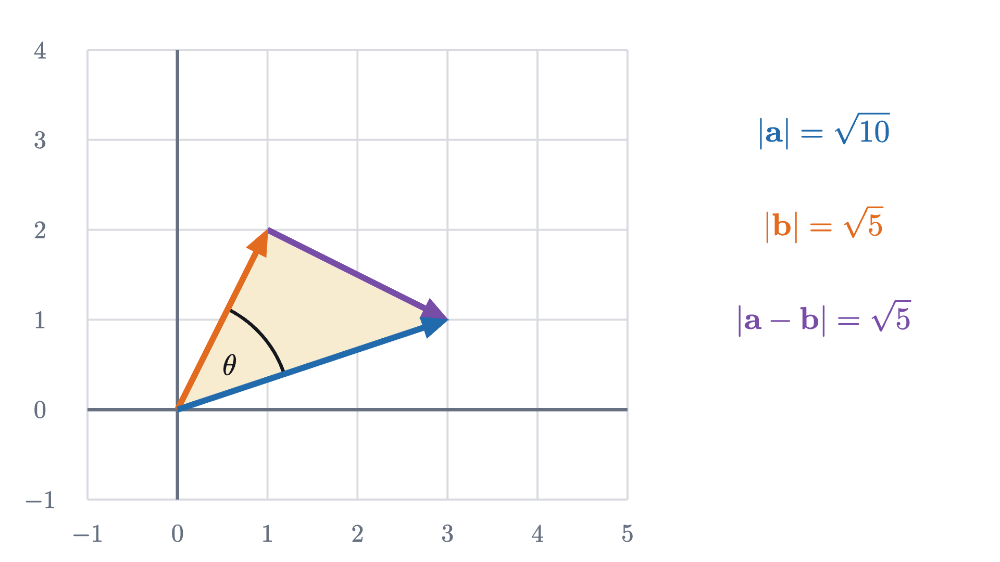
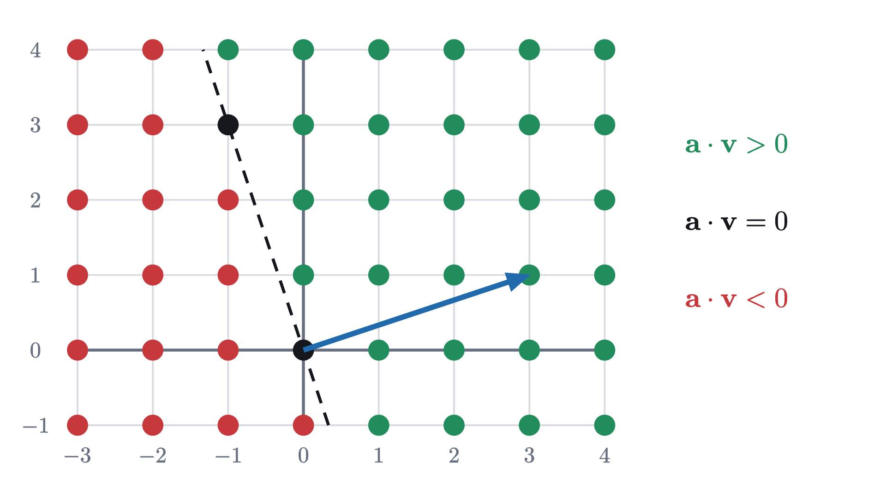
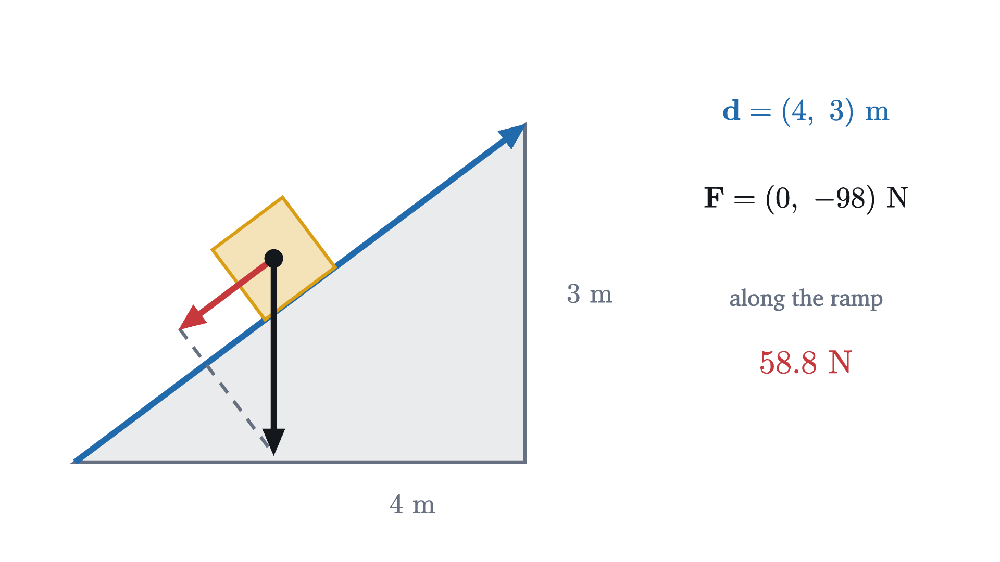

The dot product: projection, angle and why the formula works
Multiply matching coordinates and add. The result measures how far one arrow reaches along another, which gives angles, projections and Cauchy-Schwarz.
AssumesWhat is a vector? Arrows, lists of numbers, and adding themLaw of cosines and law of sines: solving any triangle
Take two arrows from the origin, $\mathbf{a} = (3, 1)$ and $\mathbf{b} = (1, 2)$. Multiply their first coordinates, multiply their second coordinates, and add: $3 \cdot 1 + 1 \cdot 2 = 5$. Now turn the whole picture a quarter turn counterclockwise. Both arrows get new coordinates, $\mathbf{a}$ becomes $(-1, 3)$ and $\mathbf{b}$ becomes $(-2, 1)$, and the recipe gives $(-1)(-2) + 3 \cdot 1 = 5$ again. The animation makes the turn gradually. The two products change the entire time, and their sum does not move.
That needs an explanation. Coordinates depend on where we happened to put the axes, so a recipe built out of coordinates has no obvious right to ignore them. This one behaves as if it responded only to the arrows themselves: how long they are and how they sit relative to each other. Our job is to find out what the 5 is measuring, and then to prove it.
I assume you know that a vector $\mathbf{v} = (v_1, v_2)$ is an arrow from the origin to the point $(v_1, v_2)$, that vectors add coordinate by coordinate and scale by multiplying each coordinate, and that the length of $\mathbf{v}$ is $|\mathbf{v}| = \sqrt{v_1^2 + v_2^2}$ by the Pythagorean theorem. The basis arrows are $\mathbf{i} = (1, 0)$ and $\mathbf{j} = (0, 1)$, and $(v_1, v_2) = v_1\mathbf{i} + v_2\mathbf{j}$.
The definition and its algebra
The inputs are two vectors and the output is a single number. Before asking what the number means, it pays to learn how it behaves.
Pause and try
With $\mathbf{a} = (3, 1)$ and $\mathbf{b} = (1, 2)$: (a) A quarter turn clockwise sends $(x, y)$ to $(y, -x)$. Turn both arrows this way and compute the dot product. (b) Compute $(2\mathbf{a}) \cdot \mathbf{b}$. (c) Compute $\mathbf{a} \cdot \mathbf{a}$ and compare it with the length of $\mathbf{a}$.
Show answerHide answer
(a) The arrows become $(1, -3)$ and $(2, -1)$, and $1 \cdot 2 + (-3)(-1) = 5$, unchanged again. (b) $2\mathbf{a} = (6, 2)$, so $(2\mathbf{a}) \cdot \mathbf{b} = 6 + 4 = 10$: doubling one arrow doubles the result. (c) $\mathbf{a} \cdot \mathbf{a} = 9 + 1 = 10$, and $|\mathbf{a}| = \sqrt{10}$. The dot product of a vector with itself is its length squared.
Parts (b) and (c) are instances of general rules, and all of them come straight from the definition.
Rules 2 and 3 are stated for the first vector, and rule 1 lets us swap the two, so they hold for the second vector as well: $\mathbf{c} \cdot (\mathbf{a} + \mathbf{b}) = \mathbf{c} \cdot \mathbf{a} + \mathbf{c} \cdot \mathbf{b}$ and $\mathbf{a} \cdot (k\mathbf{b}) = k\,(\mathbf{a} \cdot \mathbf{b})$. A product that is linear in each of its two inputs separately is called bilinear. In practice it means that brackets expand the way they do for numbers. One expansion will carry the main proof of this lesson:
The easy case: one arrow lies along an axis
The meaning of the number is easiest to see when $\mathbf{b}$ points along the $x$ axis. Let $\mathbf{b} = (4, 0)$. Then $\mathbf{a} \cdot \mathbf{b} = 4a_1 + 0 \cdot a_2 = 4a_1$: the second coordinate of $\mathbf{a}$ is ignored, and the first is multiplied by the length of $\mathbf{b}$.
Physics has a use for exactly this. Suppose a cart rolls 4 meters east along a straight track while you pull it with a force $\mathbf{a}$, measured in newtons, aimed off to one side. Only the eastward part of your pull, $a_1$, moves the cart along the track, and the work you do is that part times the distance: $4a_1$ joules. Pull straight north and you do no work on the cart. Pull partly west and your work is negative, because you are holding it back.
Geometrically, $a_1$ is the shadow of $\mathbf{a}$ on the line of $\mathbf{b}$, if the light shines straight down onto that line. It is a signed length: positive when the shadow falls on the side $\mathbf{b}$ points to, negative on the other side.
Pause and try
Let $\mathbf{b} = (4, 0)$ and let $\mathbf{a}$ be an arrow of length 3 that you may aim anywhere. For which directions of $\mathbf{a}$ is $\mathbf{a} \cdot \mathbf{b}$ largest, zero, and most negative, and what are those three values?
Show answerHide answer
The dot product is 4 times the $x$ coordinate of $\mathbf{a}$, which ranges from $3$ to $-3$. It is largest, $12$, when $\mathbf{a} = (3, 0)$ points along $\mathbf{b}$. It is $0$ when $\mathbf{a} = (0, 3)$ or $(0, -3)$, at a right angle to $\mathbf{b}$. It is most negative, $-12$, when $\mathbf{a} = (-3, 0)$ points against $\mathbf{b}$.
If $\theta$ is the angle from $\mathbf{b}$ up to $\mathbf{a}$, the shadow has signed length $|\mathbf{a}|\cos\theta$. That is what the cosine is: an arrow of length $L$ at angle $\theta$ from the positive $x$ axis has $x$ coordinate $L\cos\theta$. So in this special position
Now recall the opening experiment, where turning both arrows together left the dot product alone. If that is true in general, we could turn any pair of arrows until $\mathbf{b}$ lies along the positive $x$ axis, and the formula above would hold for every pair. So we have a conjecture: $\mathbf{a} \cdot \mathbf{b}$ is always the signed shadow of $\mathbf{a}$ on $\mathbf{b}$, times the length of $\mathbf{b}$. So far it rests on one numerical experiment. I want to do two things with it: see directly why a sum of coordinate products should compute a shadow on a tilted line, and then prove the statement.
Why the formula sees a shadow on a tilted line
Take a line through the origin that is not an axis, the one along $\mathbf{u} = (0.8, 0.6)$. I chose $\mathbf{u}$ to have length 1, since $0.8^2 + 0.6^2 = 1$, so that $\mathbf{u}$ only names a direction. How long is the shadow of $\mathbf{a} = (3, 1)$ on this line? The conjecture says $\mathbf{a} \cdot \mathbf{u} = 3 \cdot 0.8 + 1 \cdot 0.6 = 3$. Step through the figure to see where each term comes from.
Two facts about shadows are doing the work. The first is that shadows add. Walk from the origin to the tip of $\mathbf{a}$ along $3\mathbf{i}$ and then along $1\mathbf{j}$, and your shadow on the line moves from the origin to the foot of the perpendicular from $\mathbf{a}$, however you got there. So the shadow of $\mathbf{a}$ is the shadow of the first leg plus the shadow of the second, and a leg three times as long casts a shadow three times as long. Casting a shadow on a fixed line is a linear operation.
The second fact is about the basis arrows. How long is the shadow of $\mathbf{i}$ on the line along $\mathbf{u}$? Both are arrows of length 1, and the picture of the two of them is symmetric under the reflection that swaps them. So the shadow of $\mathbf{i}$ on $\mathbf{u}$ is as long as the shadow of $\mathbf{u}$ on $\mathbf{i}$. But the shadow of $\mathbf{u}$ on the $x$ axis is the first coordinate of $\mathbf{u}$, which is $0.8$. In the same way the shadow of $\mathbf{j}$ on $\mathbf{u}$ is $u_2 = 0.6$.
Put the two together: the shadow of $a_1\mathbf{i} + a_2\mathbf{j}$ on the line along a unit vector $\mathbf{u}$ is $a_1u_1 + a_2u_2$. The coordinates of $\mathbf{u}$ appear in the formula because they are the shadows of the basis arrows. For a vector $\mathbf{b}$ of any length in the direction of $\mathbf{u}$, we have $\mathbf{b} = |\mathbf{b}|\,\mathbf{u}$, and rule 3 gives $\mathbf{a} \cdot \mathbf{b} = |\mathbf{b}|\,(\mathbf{a} \cdot \mathbf{u})$: the shadow times the length of $\mathbf{b}$, as conjectured.
This is an explanation, and I would not yet call it a proof, because “shadows add” was read off a picture in which everything had convenient signs. The proof below takes a different road and leans on one theorem from trigonometry.
The theorem: lengths and the angle
First we need to say what the angle between two vectors is. For nonzero $\mathbf{a}$ and $\mathbf{b}$, the angle between them is the angle $\theta$ at the origin in the triangle with corners $\mathbf{0}$, $\mathbf{a}$ and $\mathbf{b}$, so $0^\circ \le \theta \le 180^\circ$. It is $0^\circ$ when $\mathbf{b}$ is a positive multiple of $\mathbf{a}$ and $180^\circ$ when it is a negative multiple; in those two cases the triangle is flat.

The theorem we borrow is the law of cosines: in a triangle with sides of lengths $p$, $q$, $r$, where the angle between the sides $p$ and $q$ is $\theta$,
It is the Pythagorean theorem with a correction term for triangles whose angle is not $90^\circ$, and the linked lesson proves it by dropping an altitude and applying Pythagoras twice.
This is a complete proof, given the law of cosines. Its content is one comparison: the squared distance between the tips can be computed from coordinates, where bilinearity produces the term $-2\,\mathbf{a} \cdot \mathbf{b}$, or from the triangle, where trigonometry produces $-2|\mathbf{a}||\mathbf{b}|\cos\theta$.
The opening puzzle is now settled. Turning both arrows together changes neither length and does not change the angle between them, so the right side stays put, and the left side has to follow it. The shadow conjecture is settled too: $|\mathbf{a}|\cos\theta$ is the signed shadow of $\mathbf{a}$ on the line of $\mathbf{b}$, and it gets multiplied by $|\mathbf{b}|$.
Perpendicular, acute, obtuse
The sign of $\cos\theta$ sorts angles into three kinds, and lengths are positive, so the sign of the dot product does the same sorting without any trigonometry.
The zero vector has no direction and makes no angle with anything, but $\mathbf{0} \cdot \mathbf{b} = 0$ for every $\mathbf{b}$. The usual convention is to call two vectors orthogonal when their dot product is 0, which counts $\mathbf{0}$ as orthogonal to everything and agrees with “perpendicular” otherwise.
Pause and try
Describe all vectors $\mathbf{v} = (x, y)$ that are orthogonal to $\mathbf{a} = (3, 1)$. Where do they lie?
Show answerHide answer
The condition is $3x + y = 0$, so $y = -3x$ and $\mathbf{v} = (x, -3x) = -x\,(-1, 3)$. These are the multiples of $(-1, 3)$: a line through the origin. In general $(-a_2, a_1)$ is orthogonal to $(a_1, a_2)$, since $-a_1a_2 + a_2a_1 = 0$. It is $\mathbf{a}$ turned a quarter turn.

The dashed line is the set of solutions of $3x + y = 0$. An equation like $3x + y = c$ says “the dot product of $(x, y)$ with $(3, 1)$ equals $c$”, and its solutions form a line perpendicular to $(3, 1)$. The coefficients of a linear equation are a vector, and that vector points straight across the line.
Projection: the shadow as a vector
So far the shadow has been a length. Often we want the shadow itself, as a vector, together with what is left over.
Let us find the shadow of $\mathbf{b} = (1, 2)$ on the line of $\mathbf{a} = (3, 1)$ without any angles. The shadow is some multiple $t\,\mathbf{a}$. What singles out the right $t$ is the perpendicular: the leftover $\mathbf{b} - t\,\mathbf{a}$ must be orthogonal to $\mathbf{a}$. The video slides $t$ and watches the dot product of the leftover with $\mathbf{a}$.
The condition can be solved for $t$ with the rules: $(\mathbf{b} - t\,\mathbf{a}) \cdot \mathbf{a} = \mathbf{b} \cdot \mathbf{a} - t\,(\mathbf{a} \cdot \mathbf{a}) = 5 - 10t$, which is zero for $t = \frac12$. The shadow is $\frac12(3, 1) = (1.5, 0.5)$ and the leftover is $(1, 2) - (1.5, 0.5) = (-0.5, 1.5)$. Nothing in that calculation was special to these numbers.
The proof used only the four rules, so it holds for vectors with any number of coordinates. The length of the projection agrees with the shadow from before: $|\mathbf{p}| = \dfrac{|\mathbf{v} \cdot \mathbf{w}|}{|\mathbf{w}|^2}\,|\mathbf{w}| = \dfrac{|\mathbf{v} \cdot \mathbf{w}|}{|\mathbf{w}|} = |\mathbf{v}|\,|\cos\theta|$.

The Cauchy-Schwarz inequality
A shadow is never longer than the arrow that casts it. Written out with dot products, that plain remark becomes one of the most used inequalities in mathematics.
The middle line of the proof is the Pythagorean theorem for the right triangle with legs $\mathbf{p}$ and $\mathbf{r}$ and hypotenuse $\mathbf{a}$, derived here from bilinearity alone. In the plane the inequality also follows from $|\cos\theta| \le 1$, but the proof above never mentions an angle, and that matters. For vectors with three or more coordinates we have not defined an angle at all. Cauchy-Schwarz says that for nonzero vectors the number $\dfrac{\mathbf{a} \cdot \mathbf{b}}{|\mathbf{a}||\mathbf{b}|}$ lies between $-1$ and $1$, so it is the cosine of exactly one angle between $0^\circ$ and $180^\circ$, and that angle is taken as the definition of the angle between $\mathbf{a}$ and $\mathbf{b}$ in any dimension.
Where the analogy with multiplication breaks
The dot product expands like a product of numbers, which tempts people to treat it like one in other ways.
What was hard here was that the definition and the meaning live in different worlds. The definition is arithmetic on coordinates, the meaning is a shadow, and the bridge between them is a single computation of $|\mathbf{a} - \mathbf{b}|^2$ done two ways. The reusable idea is bilinearity: once a product expands like ordinary multiplication, lengths, angles, projections and the Pythagorean theorem can all be handled by algebra, in any number of dimensions. The dot product returns whenever a matrix meets a vector, because each coordinate of $A\mathbf{x}$ is a row of $A$ dotted with $\mathbf{x}$; the lesson on linear systems reads each equation of $A\mathbf{x} = \mathbf{b}$ that way.
Check yourself
Two nonzero vectors satisfy $\mathbf{a} \cdot \mathbf{b} = -6$. What can you conclude?
Problems
The first three are computations, the next three use the rules to explain something, and the last two are proofs.
Problem 1
Compute: (a) $(2, -1) \cdot (3, 4)$; (b) $(1, 2, 3) \cdot (4, -5, 6)$; (c) the length of $(2, -1)$. (d) Which pairs among $(2, -1)$, $(1, 2)$ and $(-4, 2)$ are orthogonal?
Show solutionHide solution
(a) $6 - 4 = 2$. (b) $4 - 10 + 18 = 12$. (c) $\sqrt{4 + 1} = \sqrt5$. (d) $(2, -1) \cdot (1, 2) = 2 - 2 = 0$ and $(1, 2) \cdot (-4, 2) = -4 + 4 = 0$, so those two pairs are orthogonal. $(2, -1) \cdot (-4, 2) = -8 - 2 = -10$, which is not zero. In fact $(-4, 2) = -2\,(2, -1)$, so these two point in opposite directions.
Problem 2
Find the angle between $(3, 4)$ and $(5, 12)$ to the nearest tenth of a degree.
Show solutionHide solution
The dot product is $15 + 48 = 63$. The lengths are $\sqrt{9 + 16} = 5$ and $\sqrt{25 + 144} = 13$. So $\cos\theta = \frac{63}{65} \approx 0.9692$ and $\theta \approx 14.3^\circ$. Check with directions: $(3, 4)$ is at $53.13^\circ$ from the $x$ axis and $(5, 12)$ at $67.38^\circ$, which differ by $14.25^\circ$.
Problem 3
Find the projection of $\mathbf{v} = (4, 7)$ onto $\mathbf{w} = (3, 4)$ and the leftover $\mathbf{r}$. Use them to find the distance from the point $(4, 7)$ to the line through the origin along $(3, 4)$.
Show solutionHide solution
$\mathbf{v} \cdot \mathbf{w} = 12 + 28 = 40$ and $\mathbf{w} \cdot \mathbf{w} = 25$, so $\mathbf{p} = \frac{40}{25}(3, 4) = (4.8, 6.4)$ and $\mathbf{r} = (4, 7) - (4.8, 6.4) = (-0.8, 0.6)$. Check: $\mathbf{r} \cdot \mathbf{w} = -2.4 + 2.4 = 0$. The point $\mathbf{p}$ is the foot of the perpendicular from $(4, 7)$ to the line, so the distance is $|\mathbf{r}| = \sqrt{0.64 + 0.36} = 1$.
Problem 4
For which $k$ are $(k, 2)$ and $(3, k - 5)$ orthogonal?
Show solutionHide solution
The dot product is $3k + 2(k - 5) = 5k - 10$, which is zero exactly for $k = 2$. Check: $(2, 2) \cdot (3, -3) = 6 - 6 = 0$.
Problem 5
A sled is pulled 20 m across level snow by a rope that makes an angle of $30^\circ$ with the ground. The tension in the rope is 50 N. How much work does the rope do on the sled? Answer once with the angle formula and once with coordinates.
Show solutionHide solution
With the angle: $W = |\mathbf{F}||\mathbf{d}|\cos\theta = 50 \times 20 \times \cos 30^\circ = 1000 \times 0.8660 \approx 866$ J. With coordinates: put the $x$ axis along the motion, so $\mathbf{d} = (20, 0)$ and $\mathbf{F} = (50\cos 30^\circ, 50\sin 30^\circ) \approx (43.30, 25)$. Then $\mathbf{F} \cdot \mathbf{d} \approx 43.30 \times 20 + 25 \times 0 = 866$ J. The upward 25 N of the pull does no work, because the sled does not move upward.
Problem 6
Let $\mathbf{a} = (3, 1)$. Describe the set of all $\mathbf{v} = (x, y)$ with $\mathbf{a} \cdot \mathbf{v} = 10$. Which point of that set is closest to the origin, and how far away is it?
Show solutionHide solution
The condition is $3x + y = 10$, a line. One point on it is $\mathbf{a}$ itself, since $\mathbf{a} \cdot \mathbf{a} = 10$. If $\mathbf{v}$ is any point on it, then $\mathbf{a} \cdot (\mathbf{v} - \mathbf{a}) = 10 - 10 = 0$, so $\mathbf{v} = \mathbf{a} + \mathbf{r}$ with $\mathbf{r}$ orthogonal to $\mathbf{a}$: the line passes through the tip of $\mathbf{a}$ and is perpendicular to $\mathbf{a}$. For such a point, $|\mathbf{v}|^2 = |\mathbf{a}|^2 + 2\,\mathbf{a} \cdot \mathbf{r} + |\mathbf{r}|^2 = 10 + |\mathbf{r}|^2$, which is smallest when $\mathbf{r} = \mathbf{0}$. So the closest point is $(3, 1)$, at distance $\sqrt{10} \approx 3.16$.
Problem 7
Prove that the diagonals of a parallelogram are perpendicular if and only if all four sides have the same length (the parallelogram is a rhombus).
Show solutionHide solution
Let the sides from one corner be the vectors $\mathbf{a}$ and $\mathbf{b}$. The diagonals are $\mathbf{a} + \mathbf{b}$ and $\mathbf{a} - \mathbf{b}$. Expanding by bilinearity and using symmetry,
The diagonals are perpendicular exactly when this is 0, that is, when $|\mathbf{a}| = |\mathbf{b}|$. Opposite sides of a parallelogram are equal, so $|\mathbf{a}| = |\mathbf{b}|$ says all four sides are equal. (A parallelogram with nonzero area has nonzero diagonals, so “dot product zero” does mean perpendicular here.)
Problem 8
Prove the triangle inequality $|\mathbf{a} + \mathbf{b}| \le |\mathbf{a}| + |\mathbf{b}|$ for vectors with any number of coordinates. When does equality hold?
Show solutionHide solution
Both sides are nonnegative, so it is enough to compare their squares. By bilinearity, $|\mathbf{a} + \mathbf{b}|^2 = |\mathbf{a}|^2 + 2\,\mathbf{a} \cdot \mathbf{b} + |\mathbf{b}|^2$. By Cauchy-Schwarz, $\mathbf{a} \cdot \mathbf{b} \le |\mathbf{a} \cdot \mathbf{b}| \le |\mathbf{a}||\mathbf{b}|$, so
Equality needs $\mathbf{a} \cdot \mathbf{b} = |\mathbf{a}||\mathbf{b}|$. By the equality case of Cauchy-Schwarz one vector is a multiple of the other, say $\mathbf{a} = t\,\mathbf{b}$ (or $\mathbf{b} = \mathbf{0}$), and then $\mathbf{a} \cdot \mathbf{b} = t|\mathbf{b}|^2$ must be nonnegative, so $t \ge 0$. Equality holds exactly when one vector is a nonnegative multiple of the other: the two arrows point the same way and walking along both is a straight path.